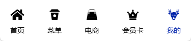
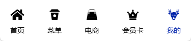

[] 路由样式设计
. 本例采用路由属性类，通过全局、单独定制的方式实现
1. 配置路由时，指定路由样式类
const router = createRouter({
history: createWebHistory(),
routes:[
//...
],
linkActiveClass: "nav-color",
linkExactActiveClass: "exact-nav-color",
});
2. 在主样式文件 app.css 中设置全局路由样式；这里保持一致
.nav-color {
color: var(--main-color);
}
.exact-nav-color {
color: var(--main-color);
}
3. 主路由/导航 AppNav.vue - 封装为组件
3.1 组件数据 <script>
const nav = ref([
{ id: 0, title: '首页', path: '/', icon: 'icon-home1' },
{ id: 1, title: '菜单', path: '/menu', icon: 'icon-coffee-cup' },
{ id: 2, title: '电商', path: '/mall', icon: 'icon-Bag-' },
{ id: 3, title: '会员卡', path: '/membership', icon: 'icon-membership_code' },
{ id: 4, title: '我的', path: '/mine', icon: 'icon-rudolfdeer' }
])
3.1 组件模板 <template> - 配合字体图标实现
<div class="app-nav">
<RouterLink class="nav-item" v-for="(item, ind) in nav" :to="item.path" :key="item.id" replace>
<span class="iconfont" :class="item.icon"></span>
<div>{{ item.title }}</div>
</RouterLink>
</div>
3.1 组件样式 <style> - 自动应用全局路由样式；其它样式略


 

主路由/导航 AppNav.vue 全局样式应用效果
4. 菜单视图 MenuView.vue
4.1 配置2级路由/标签页内容子路由 - 重定向到商品列表页；后期封装为组件
{
path: "/menu",
name: "menu",
redirect: "/menu/goods",
component: () => import("@/views/MenuView.vue"),
meta: { showNav: true, title: "菜单" },
children: [
{
path: "goods",
name: "goods",
component: () => import("@/components/Goods.vue"),
meta: { title: "菜单-商品列表" },
},
{
path: "vip",
name: "vip",
component: () => import("@/components/Vip.vue"),
meta: { title: "菜单-会员卡" },
},
{
path: "rank",
name: "rank",
component: () => import("@/components/Rank.vue"),
meta: { title: "菜单-年度封神榜" },
},
{
path: "favorite",
name: "favorite",
component: () => import("@/components/Favorite.vue"),
meta: { title: "菜单-我的常点" },
},
],
}
4.2 视图数据 <script> - 用于渲染视图模板
const tabs = [
{ ind: 0, title: '经典菜单', path: '/menu/goods', keyword: 'classic' },
{ ind: 1, title: '会员卡', path: '/menu/vip', keyword: 'member' },
{ ind: 2, title: '年度封神榜', path: '/menu/rank', keyword: 'rank' },
{ ind: 3, title: '我的常点', path: '/menu/favorite', keyword: 'favor' },
]
4.3 视图模板 <template> - 需要指定子路由出口 - 路由视图 <RouterView />
<div class="links">
<RouterLink class="link" v-for="(item, ind) in tabs" :key="item.id" :to="item.path">
{{ item.title }}
</RouterLink>
</div>
<div class="sub-view">
<RouterView />
</div>
4.4 视图样式 <style> - 重新制定样式，覆盖全局路由样式；采用父相子绝；其它辅助类可以自由设计
.link {
position: relative;
}
.exact-nav-color::after {
content: '';
position: absolute;
left: 50%;
bottom: 0;
transform: translateX(-50%);
width: 60%;
height: 4px;
background-color: var(--main-color);
}


菜单视图 MenuView.vue 子路由样式应用效果
5. 菜单视图其它内容请自行设计并完善